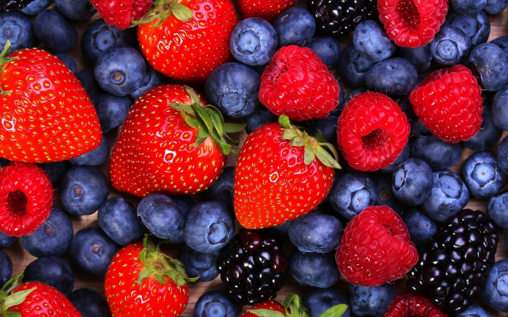
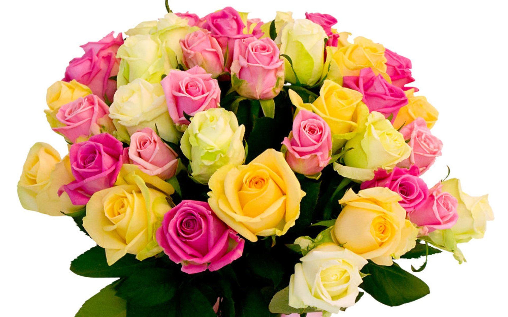
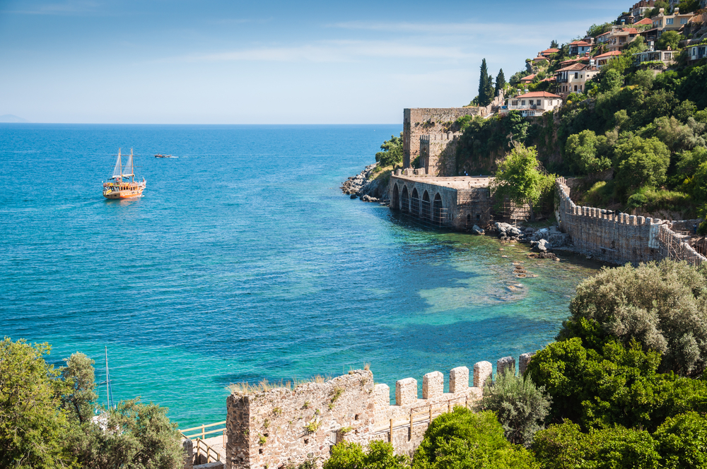
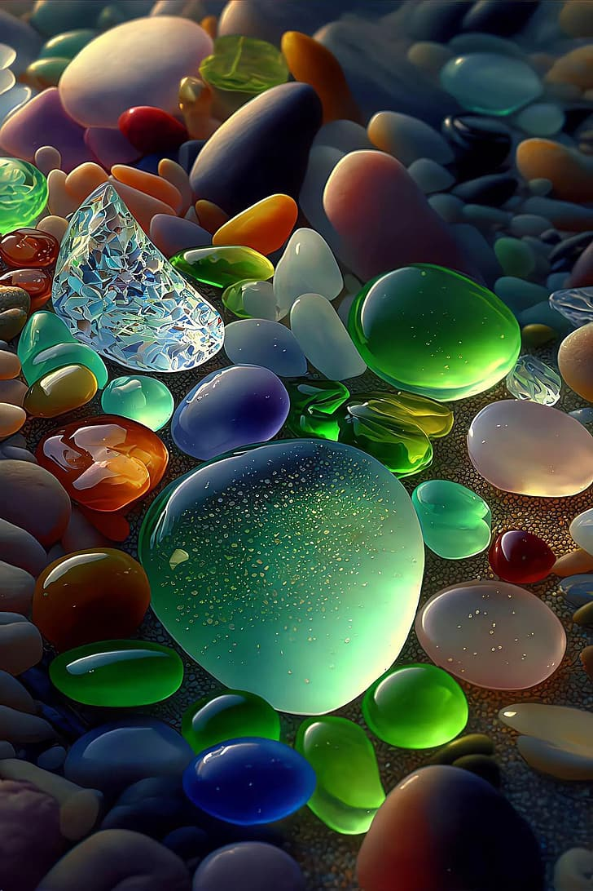

{% extends "base.html" %}
{% block lab %} Лабораторная работа 2 {% endblock %}
{% block main %}
Картинки
Вы знали, что ягоды – это не только вкусная, но и очень полезная пища? Возможно,
ягоды – самое полезное, что бывает в рационе человека. Если регулярно включать их в
рацион, можно отказаться от приема витаминно-минеральных комплексов. Давайте подробнее
разберем, чем же так полезны ягоды.

Нежно розовые бутоны также ассоциируются с мечтательностью, доверчивостью,
обаянием и молодостью.

Питание котенка играет ключевую роль в его физическом и социальном развитии.
Правильное сочетание питательных веществ в корме будет способствовать развитию
вашего питомца и послужит основой для здоровой жизни.

Турция — популярный выбор российских и европейских туристов. Здесь доступные цены,
отличный сервис и теплое море 6 месяцев в году.

Блестящие яйцеобразные гранитные глыбы округлой формы, которые мы можем видеть на пляже,
— прочный и блестящий (благодаря смеси слюды, кварца и полевого шпата) образец
вулканической породы. Из него возводят монументы и обелиски, он востребован строителями
и дизайнерами. Другие отделочные камни — базальты, туфы разных оттенков — прекрасно
подходят для облицовки поверхностей. Почти любой морской камень можно использовать в
прикладных либо декоративных целях.

{% endblock %}